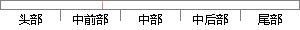

鉴于此，随机森林分类器非常适合对域名进行分类。
片段位置图

相似结果|
相似片段 1：的重复模式、域名的改变点个数、域名中数字百分比等属性，并通过并行加权的随机森林分类算法快速对未知域名进行准确的分类，以实现对恶意域名的有效检测。 分别在原始参数、调优后参数和模型改进后三种情况下进行分类
|
※ 片段修改建议 ※
近似词参考：- 森林：丛林
- 非常：很是 极度 十分 特别很是 异常 无比
- 适合：合适 得当 适宜
- 进行：举行
系统自动生成语句：鉴于此，随机丛林分类器很是合适对域名举行分类。
注：本片段修改建议为系统自动生成，仅供参考。